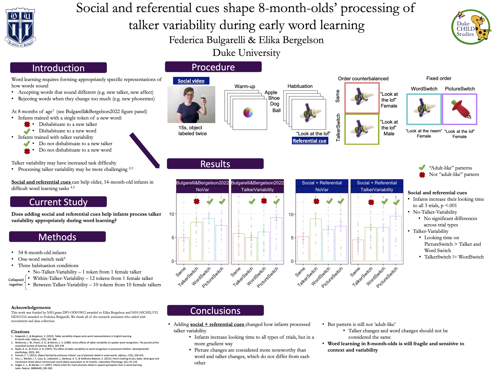

<div class="container" id="main">
 <div class="row">
  <div class="12u">
   <div class="content">
    <!-- Content -->
    <article class="box page-content">
     <header>
      <h2>
       Social and referential cues shape 8-month-old' processing of talker variability during early word learning
      </h2>
      <h3>
       Bulgarelli &amp; Bergelson (2022)
      </h3>
      <h3>
       Presented at CDS 2022 in Madison, WI
      </h3>
     </header>
     <div class="3u 12u(mobile)">
      <section class="box feature">
       <a class="image featured" href="../../files/presentations/BulgarelliBergelson_CDS2022_Poster.pdf">
        
       </a>
      </section>
     </div>
    </article>
   </div>
  </div>
 </div>
</div>
